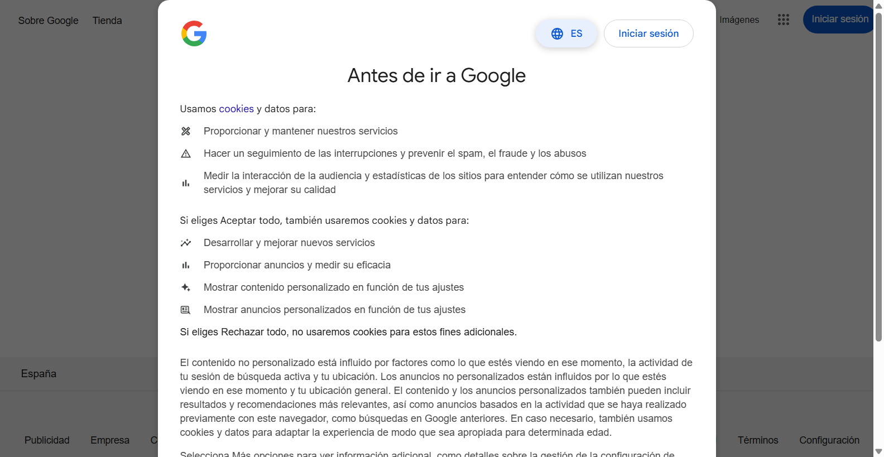

tatus: ok
[1773073712.010][DEBUG]: DevTools WebSocket Command: Target.activateTarget (id=33) (session_id=) browser {
"targetId": "8DB3B45106A167A7370D4F9C889ECAF6"
}
[1773073712.014][DEBUG]: DevTools WebSocket Response: Target.activateTarget (id=33) (session_id=) browser {
}
[1773073712.014][DEBUG]: DevTools WebSocket Command: Page.captureScreenshot (id=34) (session_id=BF1CE40CBD6001CC694ADD1A24D3E9A1) 8DB3B45106A167A7370D4F9C889ECAF6 {
}
[1773073712.150][DEBUG]: DevTools WebSocket Response: Page.captureScreenshot (id=34) (session_id=BF1CE40CBD6001CC694ADD1A24D3E9A1) 8DB3B45106A167A7370D4F9C889ECAF6 {
"data": "iVBORw0KGgoAAAANSUhEUgAABjAAAAMzCAIAAACHqcygAAAQAElEQVR4nOzdB3wURQMF8EkuvSeQhIRAIBDAINJ7V0BBimABGyr6AYqgiL1ibwhWigpIEQGVjhRBem+hBUIPhIT03nO57+UGluNaLuFyQHh/+cXN1tnZucvOu909h+HDhwsishKNRmN0wPBXLy+vR..."
}
[1773073712.150][INFO]: Waiting for pending navigations...
[1773073712.150][DEBUG]: DevTools WebSocket Command: Runtime.evaluate (id=35) (session_id=BF1CE40CBD6001CC694ADD1A24D3E9A1) 8DB3B45106A167A7370D4F9C889ECAF6 {
"expression": "1"
}
[1773073712.153][DEBUG]: DevTools WebSocket Response: Runtime.evaluate (id=35) (session_id=BF1CE40CBD6001CC694ADD1A24D3E9A1) 8DB3B45106A167A7370D4F9C889ECAF6 {
"result": {
"description": "1",
"type": "number",
"value": 1
}
}
[1773073712.153][INFO]: Done waiting for pending navigations. Status: ok
[1773073712.153][INFO]: [b9b99caa517de77531cfe63421db31cf] RESPONSE Screenshot "iVBORw0KGgoAAAANSUhEUgAABjAAAAMzCAIAAACHqcygAAAQAElEQVR4nOzdB3wURQMF8EkuvSeQhIRAIBDAINJ7V0BBimABGyr6AYqgiL1ibwhWigpIEQGVjhRBem+hBUIPhIT03nO57+UGluNaLuFyQHh/+cXN1tnZucvOu909h+HDhwsishKNRmN0wPBXLy+vR..."
[1773073712.165][INFO]: [b9b99caa517de77531cfe63421db31cf] COMMAND Quit {
}
[1773073712.239][INFO]: [b9b99caa517de77531cfe63421db31cf] RESPONSE Quit
[1773073712.239][DEBUG]: Log type 'driver' lost 126 entries on destruction
[1773073712.239][DEBUG]: Log type 'browser' lost 1 entries on destruction
